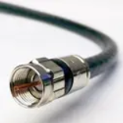
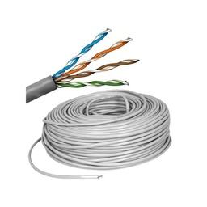
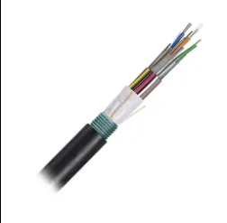
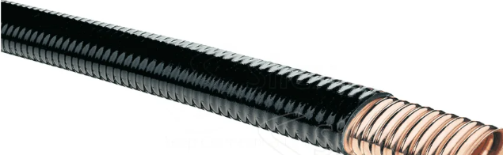

¿Qué son los medios de transmisión guiados?
Son medios físicos por los cuales se transmite información mediante señales eléctricas o luz. Se consideran guiados porque las señales viajan dentro de un medio específico, como cables o fibras.
Estos medios son fundamentales en redes de computadoras, telecomunicaciones y sistemas electrónicos. A diferencia de los medios no guiados (como las ondas de radio), estos ofrecen mayor seguridad, menor interferencia y velocidades más estables.
Tipos principales de medios guiados

Cable Coaxial
Utilizado en TV por cable y redes. Protege bien contra interferencias.

Par Trenzado
El más común en redes LAN. Hay versiones UTP y STP.

Fibra Óptica
Transmite luz. Alta velocidad y gran ancho de banda.

Guía de Onda
Transmite señales de microondas en frecuencias elevadas.
Ventajas de los medios guiados
- Mayor seguridad de transmisión.
- Menor interferencia externa.
- Mayor ancho de banda (especialmente en fibra óptica).
- Conexiones más estables para redes locales.